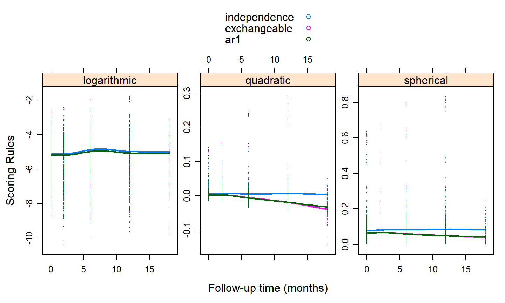
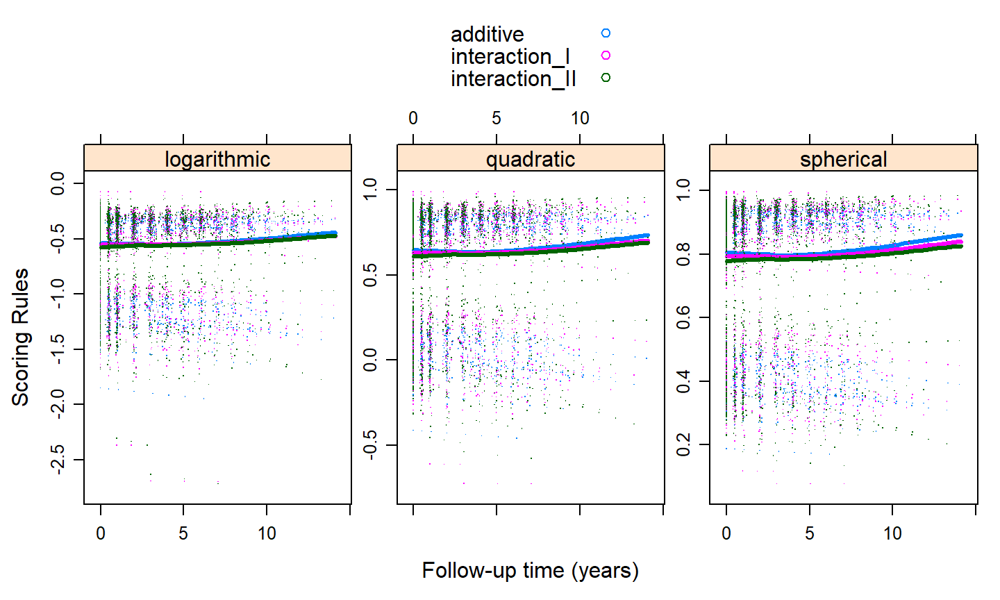

January 29, 2020
Genaralized Estimating Equations (GEEs)
A proper scoring rule is a rule that is maximized when the true probabilities are used in its calculation
The most well-known proper scoring rules
We do not get a probability mass function
We make the following conventions
R Package cvGEE
cv_gee() with arguments
object a model object from geepackrule which scoring rule to calculateK number of folds in CVM how many times to repeat CVseed the seed used in the calculationreturn_data return results in a data frameaids$CD4count <- aids$CD4 * aids$CD4
aids$obstimef <- factor(aids$obstime)
fm1 <- geeglm(CD4count ~ obstimef * drug, family = poisson(), data = aids,
id = patient, corstr = "independence")
fm2 <- update(fm1, corstr = "exchangeable")
fm3 <- update(fm1, corstr = "ar1")
t(sapply(list("independence" = fm1, "exchangeable" = fm2, "ar1" = fm3), QIC))
## QIC QICu Quasi Lik CIC params QICC ## independence -687019.3 -687019.1 343519.5 9.896028 10 -687019.1 ## exchangeable -684214.1 -684234.0 342127.0 19.984129 10 -684213.9 ## ar1 -684088.4 -684122.2 342071.1 26.908066 10 -684088.2
plot_data <- cv_gee(fm1, return_data = TRUE, max_count = 1000) plot_data$independence <- plot_data$.score plot_data$exchangeable <- unlist(cv_gee(fm2, max_count = 1000)) plot_data$ar1 <- unlist(cv_gee(fm3, max_count = 1000))

pbc2$spiders2 <- as.numeric(pbc2$spiders == "Yes")
fm1 <- geeglm(spiders2 ~ year + drug + age + sex,
family = binomial(), data = pbc2, id = id,
corstr = "independence")
fm2 <- update(fm1, formula = spiders2 ~ year + drug + age * sex)
fm3 <- update(fm1, spiders2 ~ year * drug + ns(age, 2) * sex)
t(sapply(list("additive" = fm1, "interaction_I" = fm2, "interaction_II" = fm3), QIC))
## QIC QICu Quasi Lik CIC params QICC ## additive 2351.127 2320.501 -1155.250 20.31314 5 2351.159 ## interaction_I 2324.990 2293.067 -1140.534 21.96152 6 2325.035 ## interaction_II 2333.438 2292.107 -1137.053 29.66580 9 2333.534
plot_data <- cv_gee(fm1, return_data = TRUE) plot_data$additive <- plot_data$.score plot_data$interaction_I <- unlist(cv_gee(fm2)) plot_data$interaction_II <- unlist(cv_gee(fm3))

Thank you for your attention!
These slides are available at: